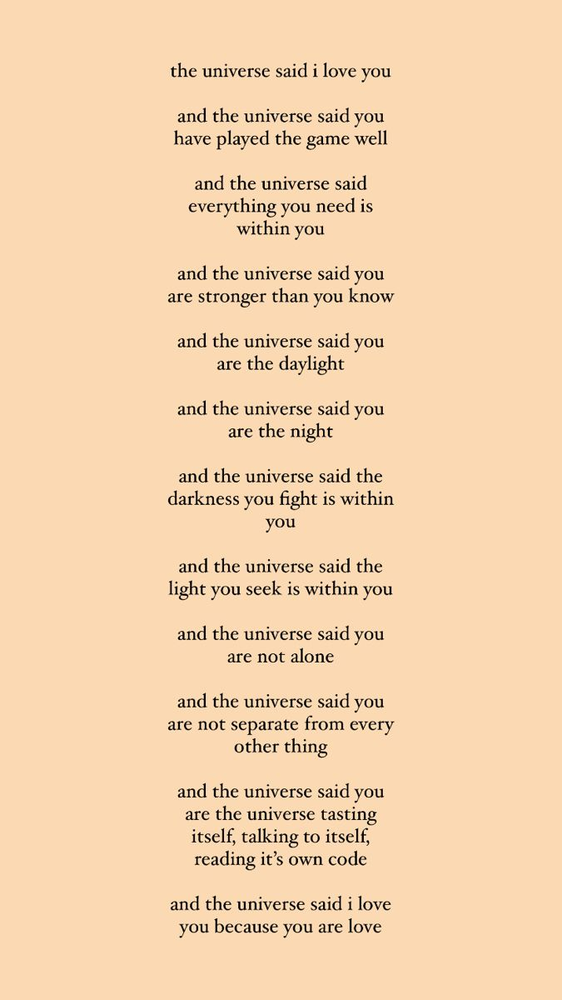
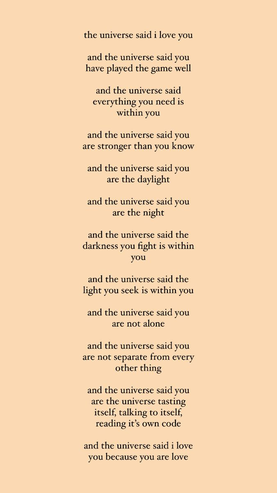

Well some people wonder how exactly does Video games tie to music not inside the game itself but are about the game? well there is a subgenre of hip-hop called Nerdcore which revolves around songs about being a nerd or a geek for example in the video games section we have "I Got No Time" which is about FNAF 4 or CG5's beloved song "Sleep Well" which is about Poppy Playtime Chapter 3 At this time most might be thinking that these songs are limited to well known games however there are most certainly some obscure ones out there like "Wake Me Up Before You Goat-Goat" By The Stupendium which is about the original Goat Simulator. Now to get back on topic, Nerdcore is a wonderful genre sprawling across a long 25 years as it started all the way back in the year 2000 with the song "Nerdcore HipHop" which was then released officially with its video in 2013 by MC Frontalot.
Here's a quick list of some books that inspired video games! Annihilation by Jeff VanderMeer: This book inspired not only the video game Control but a movie of the same name! Ayn Rand's books: Ayn Rand's books didn't get a direct video game adaptation themselves but the ideas inside the books were the inspiration for the 2007 game Bioshock. IHNMAIMS by Harlan Ellison: IHNMAIMS had a video game based pretty much exactly off the book which takes place after practically all of humanity has died and the remaining humans are tortured by A.M. which is a computer full of hate for humanity.
 

Now a very unsurprising thing is how video games tie into the world of cooking seeing as many video game series have their own cookbooks some of the most liked are Minecraft. Bethesda Games,Nintendo, and FNAF. There are many foods from the games that go into these books such as Nuka-Cola,Fizzy Faz,and Cake. Surprisingly there are very few buildings inspired by video games which is a bit sad. However, one of the more intriguing arts inspired by video games is art of video game art such as a painting of a Minecraft painting which itself is a real painting so it is a painting of a painting of a painting.
Now to get off topic a bit for our last reason about games being creative. I would like to talk about how video games inspire people to be more open about themselves and to make friends find love and such. Some video games that the page writer thinks inspire to be more friendly are "Yakuza" for the main character's friend who is infamous for just being always near and ready to help. "It Takes Two" is a great game about a couple overcoming the possibility of divorce through magic and trying to get back to their child to return them to normal. "A Way Out" is another great co-op Game about two friends breaking out of prison together and repairing their friendship. Funnily enough it is made by the same Developers of "It Takes Two". One of the more wacky games and final game on this list is "Lethal Company" which is known for bringing friends together and putting them on random planets while they try to collect scraps in order to meet quota while avoiding monsters and perishing to a dystopian economy among other things and many modded things as there are many mods anyways good bye for now wonderful viewer.